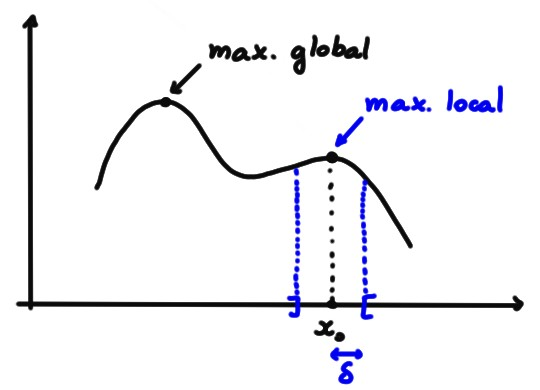
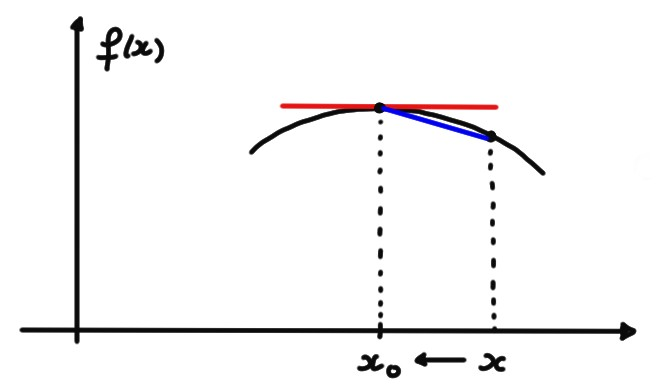
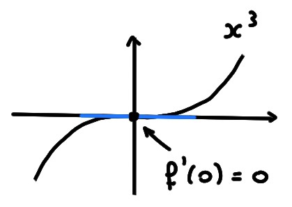
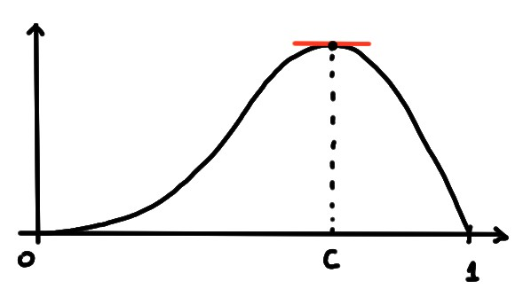
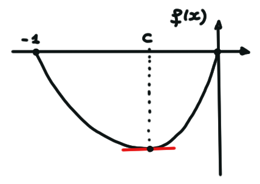
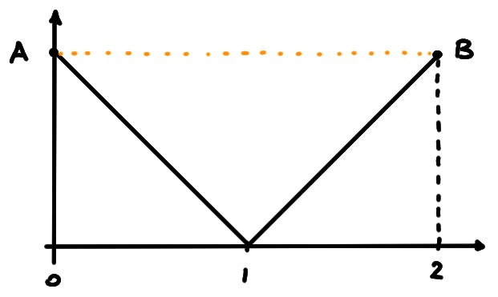

Soit \(f\) définie en \(x_0\) et dans son voisinage. On dit que
\(f\) possède un maximum local en \(x_0\) si il existe \(\delta\gt 0\)
tel que \[ f(x)\leqslant f(x_0) \quad \forall x\in ]x_0-\delta,x_0+\delta[\,. \]
\(f\) possède un minimum local en \(x_0\) si il existe \(\delta\gt 0\)
tel que \[ f(x)\geqslant f(x_0) \quad \forall x\in ]x_0-\delta,x_0+\delta[\,. \]

Un maximum/minimum global est aussi local.
Soit \(f\) définie en \(x_0\) et dans son voisinage.
Si \(f\) possède un minimum/maximum local en \(x_0\), et si \(f\) est dérivable
en \(x_0\), alors
\[f'(x_0)=0\,.\]
Supposons que \(f\) possède un maximum local en \(x_0\): \(\exists \delta\gt 0\)
tel que \(f(x)\leqslant f(x_0)\) pour tout \(x\in I:= ]x_0-\delta,x_0+\delta[\).
Si \(x\in I\), \(x\gt x_0\), on a \(f(x)-f(x_0)\leqslant 0\), et donc aussi (puisque
\(x-x_0\gt 0\))
\[ \frac{f(x)-f(x_0)}{x-x_0}\leqslant 0 \]

En prenant \(x\to x_0^+\), cela donne
\[ f'(x_0)=\lim_{x\to x_0^+}
\frac{f(x)-f(x_0)}{x-x_0}\leqslant 0\,.
\]
En procédant de même pour un \(x\lt x_0\), on montre que \(f'(x_0)\geqslant 0\). Ceci
implique donc \(f'(x_0)=0\).
Le contraire n'est pas vrai: si \(f\) est dérivable en \(x_0\) et
si \(f'(x_0)=0\), cela n'implique pas que \(f\) possède un minimum ou un
maximum en \(x_0\)! Prendre par exemple \(f(x)=x^3\) au point \(x_0=0\):

Comme \(f'(x)=3x^2\), on a \(f'(0)=0\), bien que \(0\) ne soit ni un minimum ni
un maximum local.
[Théorème de Rolle]
Soit \(f:[a,b]\to \mathbb{R}\) non-constante, dérivable sur \(]a,b[\). Si
\(f(a)=f(b)\), alors il existe \(c\in ]a,b[\) tel que
\[f'(c)=0\,.\]
C'est intuitif:
si le graphe d'une fonction lisse (continue et
dérivable) part d'un point \(A\) et arrive en un point \(B\) qui est à la même
hauteur que \(A\),
alors il existe au moins un point de son graphe où la droite tangente est
horizontale:
Comme \(f\) est continue, elle atteint son maximum en un point \(x^*\in [a,b]\),
et son minimum en un point \(x_*\in [a,b]\). Comme \(f\) n'est pas constante, au
moins un de ces points se trouve à l'intérieur de l'intervalle. Supposons que
c'est \(x^*\in ]a,b[\). Comme \(x^*\) est un maximum, c'est aussi un maximum
local, et par le lemme précédent \(f'(x^*)=0\).
Soit \(f:[0,1]\to\mathbb{R}\), définie par \(f(x):= \sin (\pi x^2)\cos(x)\).
Comme \(f\) est continue et dérivable, et comme
\(f(0)=f(1)=0\), il existe \(c\in ]0,1[\) tel que \(f'(c)=0\).

Dans ce
cas, \(c\) est solution de l'équation non-linéaire
\[2\pi c\cos(\pi c^2)\cos(c)-\sin(\pi c^2)\sin(c)=0\,, \]
et ne peut pas être donné explicitement.
Parfois, le point \(c\) peut se calculer explicitement:
\(f:[-1,0]\to \mathbb{R}\), \(f(x):= x^4+x\). On a \(f(-1)=f(0)=0\), et donc par
le Théorème de Rolle il existe \(c\in ]-1,0[\) tel que \(f'(c)=0\).

On peut en fait le calculer, car \(f'(x)=4x^3+1\), et donc \(f'(c)=0\) si et
seulement si \(c=-\sqrt[3]{\frac14}\).
Bien-sûr, si une conditions du théorème n'est pas vérifié, la conclusion du
théorème n'est pas garantie en général.
Si \(f:[0,2]\to \mathbb{R}\), \(f(x)=|x-1|\).
Ici \(f(0)=f(2)=1\), mais il n'existe aucun \(c\in ]0,2[\) tel que \(f'(c)=0\).

Ce n'est pas une contradiction avec le Théorème de Rolle, puisque \(f\) ne
satisfait pas aux hypothèses: elle est continue sur \([0,2]\), dérivable en tout
point de \(]0,2[\) sauf en \(x=1\).
Soit \(f\) définie en \(x_0\) et dans son voisinage.
Vrai ou faux?
[ ] Si \(x_0\) est à la fois un mininum et un maximum local,
alors \(f\) est constante dans un petit intervalle autour de \(x_0\).
[ ] Si \(x_0\) est un maximum ou un minimum local, alors \(f\) est
dérivable en \(x_0\) et \(f'(x_0)=0\).
[ ] Si \(f\) possède un minimum local en \(x_0\), alors \(f\) est
continue en \(x_0\).
[ ] Si \(f(x_0+\delta)f(x_0-\delta)<0\) pour tout \(\delta\) suffisamment
petit, alors \(x_0\) n'est ni un minimum, ni un maximum local.
[ ] Si \(f\) n'est pas dérivable en \(x_0\), alors \(x_0\) n'est ni un
minimum, ni un maximum local.
[ ] Si \(f\) possède un maximum local en \(x_0\), alors \(f(x)\leqslant
f(x_0)\) pour tout \(x\).
Parmi ces affirmations, lesquelles sont toujours vraies?
[ ] Soit \(f:[a,b]\to\mathbb{R}\) continue. Si il existe un point
\(c\in ]a,b[\) où \(f\) est dérivable et \(f'(c)=0\), alors \(f\) est dérivable
sur \(]a,b[\).
[ ] Soit \(f:[a,b]\to \mathbb{R}\) continue sur \(]a,b[\), dérivable sur
\(]a,b[\), telle que
\(f(a)=f(b)\). Alors il existe \(c\in ]a,b[\) tel que \(f'(c)=0\).
[ ] Soit \(f:[a,b]\to \mathbb{R}\) continue sur \(]a,b[\), dérivable sur
\(]a,b[\), telle que
\(f(a)>f(b)\). Alors il existe \(c\in ]a,b[\) tel que \(f'(c)<0\).
[ ] Soit \(f:[a,b]\to \mathbb{R}\) continue sur \([a,b]\), dérivable sur
\(]a,b[\), et telle qu'il existe \(c\in ]a,b[\) tel que \(f'(c)>0\). Alors
\(f(a)< f(b)\).
[ ] Soit \(f:[a,b]\to \mathbb{R}\) continue sur \(]a,b[\), dérivable sur
\(]a,b[\), telle que \(\lim_{x\to a^+}f(x)=\lim_{x\to b^-}f(x)\).
Alors il existe \(c\in ]a,b[\) tel que \(f'(c)=0\).
[ ] Soit \(f:[a,b]\to \mathbb{R}\) continue sur \([a,b]\),
telle que
\(f(a)=f(b)\). Alors il existe au moins un point \(c\in ]a,b[\) où \(f\) est
dérivable.
[ ] Soit \(f:\mathbb{R}\to \mathbb{R}\) dérivable en tout point \(x_0\in [a,b]\),
telle que \(f(a)=f(b)\). Alors il existe \(c\in ]a,b[\) tel que \(f'(c)=0\).